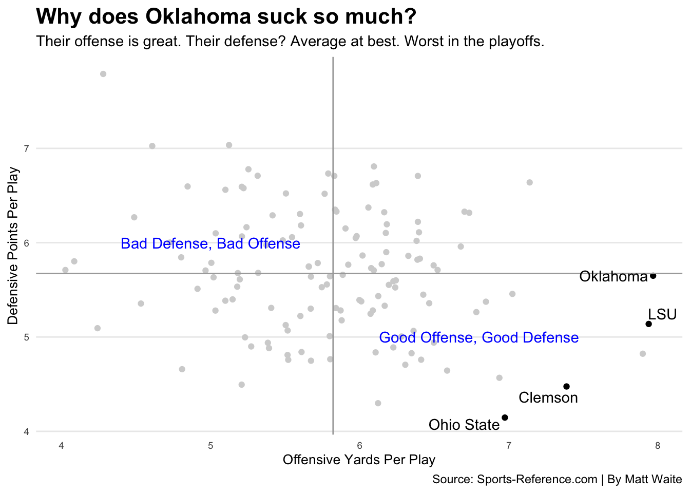

Chapter 30 Plotly
By John Strasheim
We’ve been working on making charts and graphs and outputting them as static images – png files. Why? Because images will embed into any website, work just fine on mobile, and require no special coding. But the wonder of the internet is that it’s interactive. The trouble with interactive graphics, though, is the code can be exceedingly complicated and difficult for beginners to grasp, as is the case with the javascript visualization library D3. Or the tools are ultra simple and allow for minimal customization, such as tools like Tableau. The third problem is that the accessible interactive tools – the ones that don’t require a ton of code knowledge – cost money to publish.
The library we’re going to look at in this chapter is from a company called Plotly, which sits in between all these problems. You can create interactive graphs with point and click, but you can also do it in code. You can publish graphs for free, but if you’re going to do it for a company or with a large audience, you need to pay. For our purposes, you’ll see the power without needing to pony up.
You will need to install plotly. Go to the console – not in the notebook – and run install.packages("plotly").
Then we’ll load it:
##
## Attaching package: 'plotly'## The following object is masked from 'package:formattable':
##
## style## The following object is masked from 'package:Hmisc':
##
## subplot## The following object is masked from 'package:ggplot2':
##
## last_plot## The following object is masked from 'package:stats':
##
## filter## The following object is masked from 'package:graphics':
##
## layoutTo start out, we’ll make a graph similar to something we’ve already done. We’re going to use a dataset of batting stats from the 2019 season. This dataset has players who had more than 190 plate appearances and includes their basic stats and some advanced metrics.
## Parsed with column specification:
## cols(
## .default = col_double(),
## Name = col_character(),
## Tm = col_character(),
## Division = col_character()
## )## See spec(...) for full column specifications.Let’s look at the relationship between a player’s batting average and wRC+ (weighted runs created plus).
ggplot() +
geom_point(data=batting, aes(x=`wRC+`, y=AVG)) +
geom_smooth(data=batting, aes(x=`wRC+`, y=AVG), method='lm', se=FALSE) +
labs(x='wRC+', y='Batting Average', title= "2019 MLB Season Batting", subtitle="190 PAs min to Qualify", caption="Source: FanGraphs | by John Strasheim")## `geom_smooth()` using formula 'y ~ x'
You can obviously add more aesthetics to make it look better, but you get the picture. If I’m a fan of sports though, obviously I want to see who the outlier points are or just scroll through and see each player at an individual location. We can always annotate data, but that process can be tedious.
Here is where plotly comes in.
Plotly will make your visualizatons interactive. Additionally, you can zoom in on certain parts of the viz too. For example, you can drag a box around players with a .300 average, and see all the guys in that specific range.
Let’s start simple with just the minimum needed for a scatterplot. For that, we need to specify our data source – batting – and set an X and a Y value, just like above. One difference? We prepend a ~ before the field names. We’ll add a color to separate out players by division too.
## No trace type specified:
## Based on info supplied, a 'scatter' trace seems appropriate.
## Read more about this trace type -> https://plot.ly/r/reference/#scatter## No scatter mode specifed:
## Setting the mode to markers
## Read more about this attribute -> https://plot.ly/r/reference/#scatter-mode## Warning: `arrange_()` is deprecated as of dplyr 0.7.0.
## Please use `arrange()` instead.
## See vignette('programming') for more help
## This warning is displayed once every 8 hours.
## Call `lifecycle::last_warnings()` to see where this warning was generated.We get a chart, but hover over a point. Recognize those players? You can’t unless you know each player’s specific stats to divine who they are. That isn’t very friendly, so let’s add a hover element. Then we want to specify what we want our users to see when they hover over a data point, hence hoverinfo = “text”. The next step will be to define what our text is. How that gets done is a little bit of HTML and a little bit of R. What is in quotes is what the users are going to see directly, what’s after the quotes is what data is going to appear. So “Player:”, Name translates to something like Player: Christian Yelich when the user hovers above Yelich’s data point.
Then we add the HTML, <br>, or break. All this means is we’re having a line break so all of our data is not on one line. Simple. Do this process for whatever variables you want to have your users see. So for mine, I wanted my users to see the Player’s name, wRC+, Batting Avg, and what division they are in.
plot_ly(data=batting, x= ~`wRC+`, y= ~`AVG`, color= ~`Division`,
hoverinfo = "text",
text = ~paste("Player:", Name,
'<br>wRC+:', `wRC+`,
'<br>AVG:', AVG,
'<br>Team:', Tm,
'<br>Division:', Division
))## No trace type specified:
## Based on info supplied, a 'scatter' trace seems appropriate.
## Read more about this trace type -> https://plot.ly/r/reference/#scatter## No scatter mode specifed:
## Setting the mode to markers
## Read more about this attribute -> https://plot.ly/r/reference/#scatter-modeNow we can see each player a little better. If you look at the players on the farthest right, you’ll find Mike Trout (shocker), Yordan Alvarez and Christian Yelich.
To finish, we’re going to fix the layout a bit, very similar to how we’ve been doing it in ggplot. We’re just telling plotly what we want the layout to be of our viz, starting with the title, and then doing the x and y axis names after that.
plot_ly(data=batting, x= ~`wRC+`, y= ~`AVG`, color= ~`Division`,
hoverinfo = "text",
text = ~paste("Player:", Name,
'<br>wRC+:', `wRC+`,
'<br>AVG:', AVG,
'<br>Team:', Tm,
'<br>Division:', Division
)) %>%
layout(
title = "2019 MLB Season Batting",
xaxis = list(title = "wRC+"),
yaxis = list(title = "Batting Average")
)## No trace type specified:
## Based on info supplied, a 'scatter' trace seems appropriate.
## Read more about this trace type -> https://plot.ly/r/reference/#scatter## No scatter mode specifed:
## Setting the mode to markers
## Read more about this attribute -> https://plot.ly/r/reference/#scatter-mode30.1 Publishing using Plotly
We want to now export our plotly visualization. First, you’ll need to sign up for a free plotly account. Then you’ll need to register your plotly username and your API key.
More info about how to do that can be found on Plotly’s website.
For our purposes, we need to register our username and API key this way, where you put your username and API key where prompted:
Sys.setenv("plotly_username"="Enter your plotly username here")
Sys.setenv("plotly_api_key"="Enter your API key here")Now run this line of code specifiying what variable you are exporting, and what you want the file to be named on plotly’s servers. From plotly’s website you can then do several different things like editing it on there, embedding it on websites, or create a shareable link.
To publish our chart, we need to save it to an object similar to how we’ve been creating dataframes. So something like this:
p <- plot_ly(data=batting, x= ~`wRC+`, y= ~`AVG`, color= ~`Division`,
hoverinfo = "text",
text = ~paste("Player:", Name,
'<br>wRC+:', `wRC+`,
'<br>AVG:', AVG,
'<br>Team:', Tm,
'<br>Division:', Division
)) %>%
layout(
title = "2019 MLB Season Batting",
xaxis = list(title = "wRC+"),
yaxis = list(title = "Batting Average")
)To publish it, we simply run the following, passing in our chart value p for plotly and we give it a filename.
If all goes well, a browser will pop up with your chart in it.